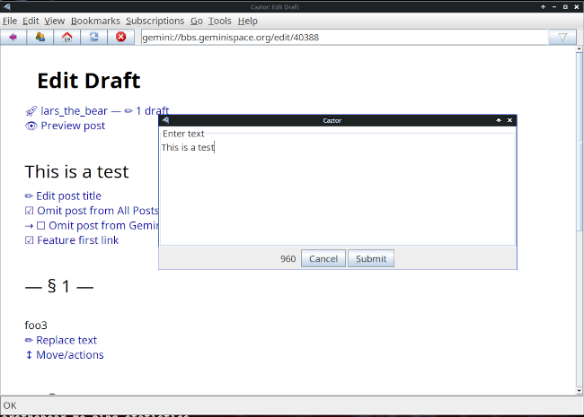
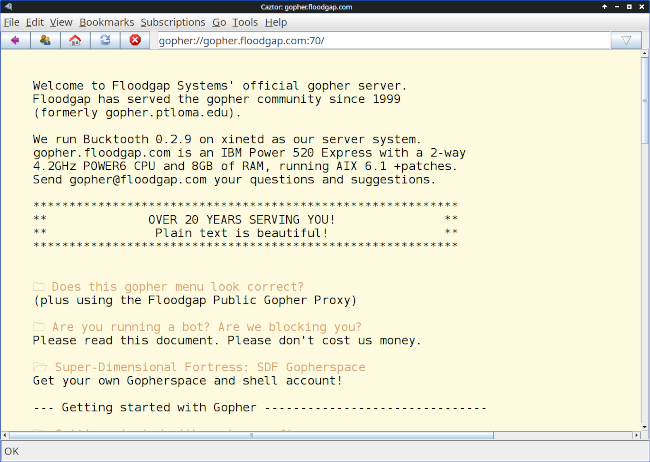

Announcing Caztor 1.0 – a browser for small-net protocols like Gemini and Gopher

Caztor is the latest iteration of the JGemini browser. It has a new name, and a heap of new features.
JGemini started life in 2021, as a Java-based graphical browser for the Gemini protocol. There weren’t any graphical browsers for Linux at that time and, as one of the stated design goals of the Gemini protocol was that it should be possible to write a browser “in a weekend”, I undertook to do just that.
The result was something that clearly looked as if it had been written in a weekend.
I got interested in the “small net” again in 2026, and dusted off JGemini. Since then it’s gained support for other protocols and document formats, a proper download manager, rudimentary media streaming, and feed aggregation.
At it’s heart, though, Caztor is a browser for me. It’s what I use every day for looking at Gemini and Gopher sites, and interacting with small net forums and bulletin boards. The features it has are features that I wanted, and the features it omits are ones that I don’t like. For example, there is no support for tabbed browsing, because I don’t like tabs.
That the user interface looks like that of a 90s web browser is a deliberate – Caztor is unashamedly nostalgic.
Whether Caztor is of interest to anybody else, I don’t know.
What makes Caztor different from other “small net” browsers?
- Caztor is a cross-platform application written in Java. It runs the same on all platforms I’ve tested, using the same binary. I mostly use it on Linux, but it works fine on Windows 11.
- There’s no particular installation – Caztor is supplied as a single Java JAR file, which you can save anywhere, and run using Java. It doesn’t require elevated permissions to install, on any platform.
- There are no dependencies except a Java JVM less than about ten
years old. And a media player like VLC or
ffmpegif you want to stream Gemini radio - Caztor is privacy-focused. It leaves nothing on disk except what you expressly save, and even then not much. It doesn’t even save URL history unless you enable it. Everything it does save is well-documented.
- Caztor has native support for Commonmark Markdown. Not everybody is behind using Markdown with the Gemini protocol, but there are moves in that direction. At present, Caztor is the only browser that has full support for Markdown, including in-line formatting and tables.
Features
- Gemini, Spartan, Gopher, and
nexprotocol support - Gemtext, CommonMark Markdown, and plain text browsing, with in-line images for documents that support them
- Authentication using per-server client certificates
- Built-in client certificate manager, which can create new certificates and incorporate existing ones
- Text styling and theme support
- Anti-aliased font rendering for a smoother text appearance
- Asynchronous transfers, to improve user interface responsiveness
- Download manager
- Search in document; search engine access from the URL bar
- Multiple windows
- Reasonably comprehensive, hyperlinked documentation with built-in viewer
- Bookmark support, with built-in editor
- Rudimentary media streaming support, using an external player
- Parses, displays, and aggregates feeds in Atom and gmisub format
Limitations
- Caztor is not as polished as some small-net browsers. In particular, some of its configuration (e.g., managing saved bookmarks and feeds) requires editing files. Caztor provides a built-in editor, but that doesn’t entirely hide the fact that you’re editing a file.
- Caztor doesn’t check a server’s TLS certificate beyond ensuring it’s in-date. It doesn’t even do “trust on first use”.
- It deliberately lacks features that many people will have come to expect, like tabs. Caztor opens every new site/capsule in a new window.
- The fact that Caztor deliberately saves little or no state will make it inconvenient for some.
Installing and running
You’ll need a Java JVM. Most Linux releases have one in their repositories. Otherwise, get an installer from Oracle’s download site.
Then just download the Caztor JAR file (see below). On Windows, you can run it by double-clicking the JAR file in a file manager. On Linux, you might be able to do the same but, if not:
$ java -jar /path/to/caztor-1.0.jar When it’s running, use the Help|Documentation menu to open the documentation viewer. Or just type a Gemini URL in the URL bar.
Obtaining Caztor
All the source code is available from my GitHub repository. In particular, there is a ready-to-use binary for release 1.0.0.
If you try it, do please let me know what you think.
Bugs
There surely are some. Please report any you find through GitHub.
Screenshots
Here are the obligatory screenshots.



Have you posted something in response to this page?
Feel free to send a webmention
to notify me, giving the URL of the blog or page that refers to
this one.